Azalo.net
Компоненты и данные
Большинство веб-сайтов в интерненте не похожи один на другой, однако в каждом из них есть некие общие детали. Мало какой сайт не содержит новостей, на многих сайтах есть форма обратной связи, каталог товаров или услуг. Список подобных типовых частей можно продолжать долго.
Одним из ключевых объектов azalo является компонент, который, как раз, и представляет из себя типовой фрагмент сайта, на подобие озвученных выше новостей, кталогов и т.д.
Структура компонента
Компонент представляет собой структуру образованную из старниц сайта и объедененную связями. Как правило компонент содержит две головных страницы - одна представляет корень публичной части, вторая - админской части сайта. На изображении ниже эти две страницы называются одинаково "Новости", но одна (публичная) имеет белый фон, другая (админская) страница имеет розовый фон.
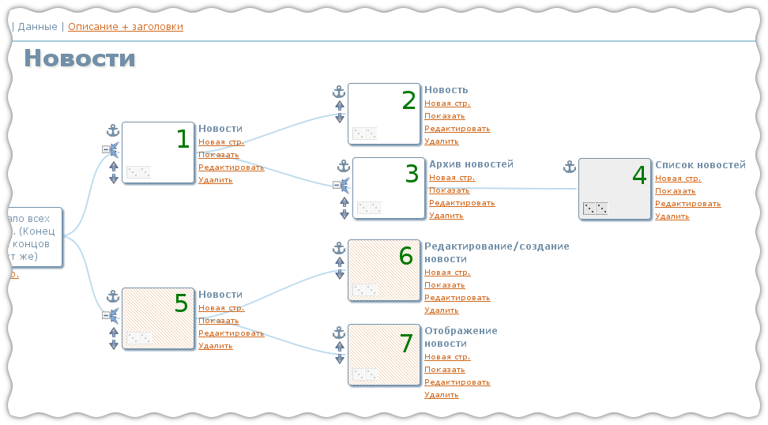
Рассмотрим подробнее каждую страницу.
- Страница публичной части сайта, на которой есть список последних новостей. Эта страница не есть блок из нескольких новостей, который проходят через весь (или почти весь) сайт. Это отдельная страница, центральную роль в которой занимает список из последних новостей. Каждый элемент списка ведет на полный текст новости. На странице также присутвует ссылка ведущая в архив новостей.
- Старница с текстом одной новости. Тут отображается вся новость и соответсвенно есть возврат к списку новостей.
-
Архив новостей. Эта страница содержит список годов, за которые были новости,
и список месяцев для каждого года. Месяц является ссылкой и ведет на список новостей
за данный месяц. Выглядит страница примерно так:
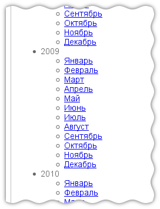
-
Страница "Список новостей", полностью повторяет внешний вид и функционал страницы №1 "Новости".
Этот особенность отмечается перетягиванием доминошки со страницы "Список новостей" (№3) на
"Новости" (№1) в двух режимах отображения "Дизайн" и "Данные"
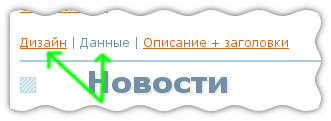
В результате этих двух перетягиваний страница "Список новостей" приобретет серый фон, который говорит о том, что страница является полным дубликатом другой страницы. Проведенные манипуляции с дубликатами позволили сократить схему. В противном случае схема имела бы такой вид: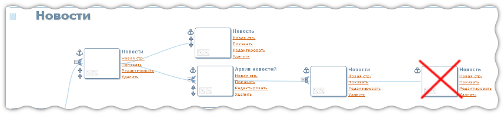
-
Эта страница принадлежит админской стороне сайта, что подразумевает недоступность для обычного пользователя.
Страница содержит список новостей с соответвующимы ссылками на отельную новость.
- Тут мы можем создать либо отредактировать новость.
- На этой странице просмоетреть без возможности редактирования.
Данные
В большинстве случаев данные используемые на сайте отражают некую сущность, в примере с компонентом новостей такой сущностью является "новость". И этой новости соответсвует некий набор данных, который, наиболее вероятно, будет проецироваться на базу данных. Т.е. в базе будет некая таблица "news", в которой и будут хранится новости.
Что бы описать данные, в данном случае новость необходимо переключится в режим просмотра "Данные"
Справа сверху будет ссылка нажав на которую можно перейти к созданию нового типа данных:
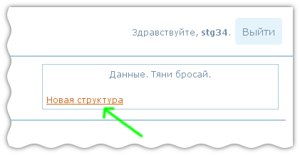
После ввода имени для структуры данных: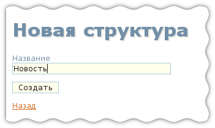
мы окажемся на странице редактирования данных. Тут можно указать необходимые данные и их типы.
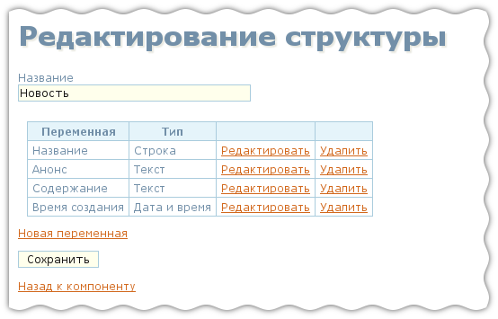
После создания структуры можно вернутся к компоненту. Теперь правая верхняя часть должна принять следующий вид:
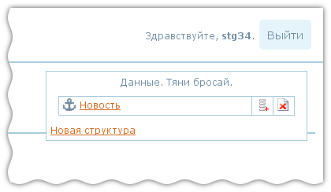
Теперь у нас есть данные, которые могут быть связанны со страницами. Якорь возле данных "Новость" можно потянуть и бросить на нужные страницы. В данном случае нужными страницами являются страницы на которых выполняются какие-либо операции с одной новостью. Такими страницами являются: "Новость" (стр. №2), "Редактирование/создание новости" (стр. №6) и "Отображение новости" (стр. №7)
После бросания якоря на эти страницы компонент приймет следующий вид:
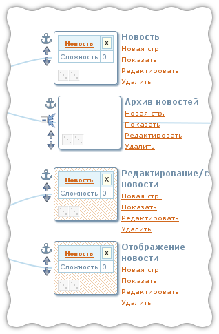
На страницах, для которых были указанны данные появились соотвеетвующие записи. Теперь, щелкнув на названии данных, в данном случае "Новость", можно указать те операции, которые будут выполняться на этой странице над указанными данными.
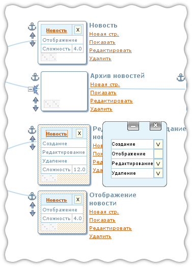
Теперь необходимо указать данные связанные со страницами "Новости" (№1 и №5). На этих страницах отображается не новость, а список (коллекция) новостей. Для того чтоб связтаь страницы и данные необходимо создать соответсвующую коллекцию. Для этого служит это кнопочка рядом со структурой данных "Новость" в правой-верхней части страницы:
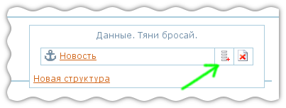
После создания коллекции, её добавления на старницу и указания операция, компонент приймет вид как показано на этой картинке:
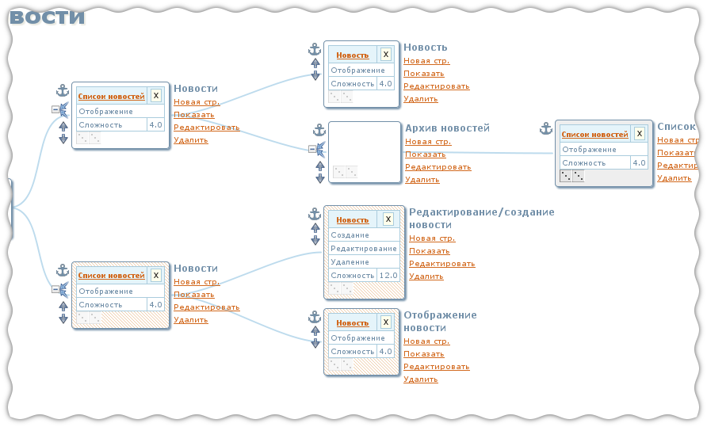
К текущему моменту осталась толко одна страница не связанная с данными. Это архив новостей. Т.к. данные отображаемые на странице напрямую не отображаются на базу данных, то и нет смысла связывать страницу с данными. Однако хотелось бы детализировать информацию о странице. И для этого есть режим отображения "Описание и заголовки"
Описание сложных структур данных
Бывают ситуации, когда некие данные не могут быть описаны одной записю в таблице. Например рассмотрим товар, который описывается следующим набором данных:
- Название товара
- Описание
- Цена
- Набор фотографий, где каждая запись это:
- Фотография
- Описание фотографии
Т.е. в данном случае мы имеем две сущности связанные отношинем один-ко-многим: один товар и с ним связано много фотографий.
Для описания этого необходимо выполнить следующие действия:
- Создать структуру описывающую фотографии
- Создать список фотографии
- Создать структуру товар, и в качестве одного из полей указать "Фотографии" с типом "Список фотографий"
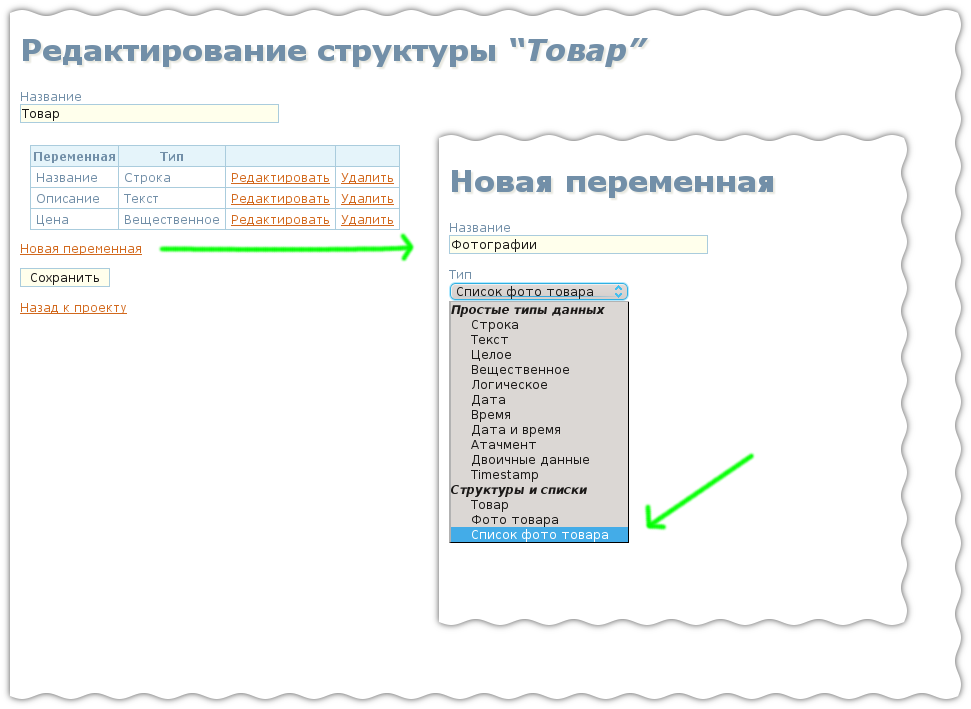
Описание и заголовки
В режиме отображения "Описание и заголовки" можно указать заголовки (те заголовки, которые сверху браузера на синем фоне, те, что <title>Заголовок</title>) для каждой страницы.
Также для каждой страницы можно задать произвольное текстовое описание страницы. При описании можно использовать wiki-синтаксис. Подсказка по синтаксису доступна по ссылке "Помощь по синтаксису"
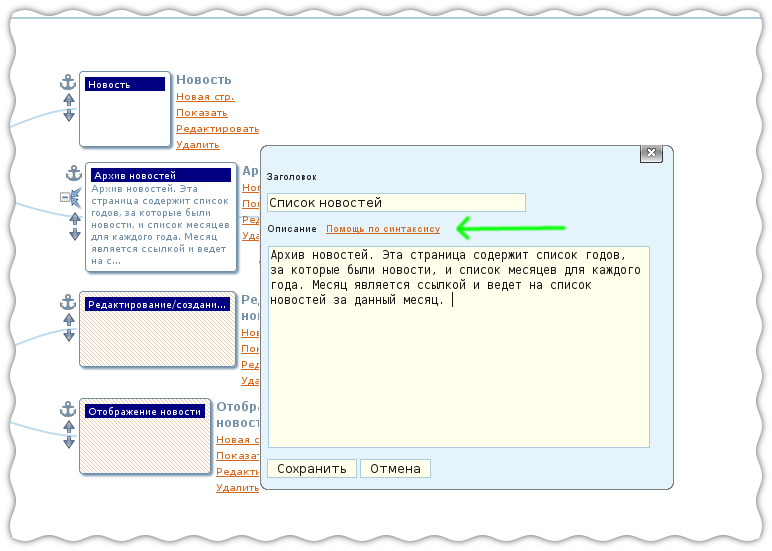
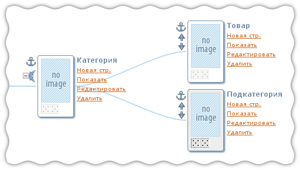
Создается страница категории, которая ведет на страницу товара и на страницу подкатегории, и для страницы подкатегории указывается, что она является полным дубликатом страницы категория.Для корневых публичных страниц компонента заголовки не задаются.
Подключение компонента к проекту
В этом разделе мы расмотрим что происходит, когда компонент добавляется к проекту.
На изображении ниже предствалены проект, состоящий из двух страниц и компонент состоящий из 5 страниц до стыковки и после. Верхняя часть изображения до, нижняя - после.
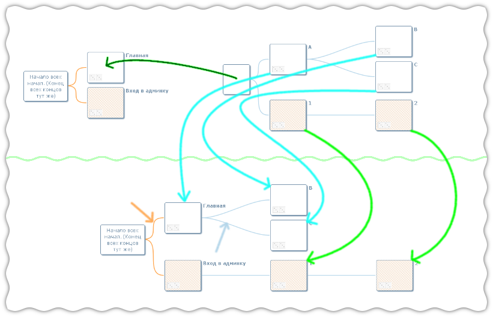
Тёмно-зеленая стрелка символизирует перетягивание якоря компонента на старницу "Главная". После этого проект принимает вид как показано на нижней части изображения.
Главная публичная страница компонента будет встроена в страницу "Главная" и отдельно отображаться не будет. Соотвественно страницы "B" и "C", будут пристыкованы непосредственно к странице "Главная". "Движение" страниц "A", "B", "C" отображено лазуревыми стрелками.
Страницы админки автоматически подстыковываются к первой админской странице проекта. В данном случае проект имеет всего одну страницу админки - "Вход в админку", поэтому страницы компонента "1" и "2" посдтыкованы к ней. "Движение" этих страниц при стыковке отображено ярко-зелеными стрелочками.
Если из проетка удалить страницу "Вход в админку", страницы "1" и "2" также не будут отображаться, и вновь появятся после создания у проекта первый страницы админки.
Связи страниц внутри проекта показаны оранжевыми линиями (см. оранжевую стрелку), свзи страниц внутри компонента отображаются голубыми линиями (см. голобую стрелку).
В режиме отображения "Компоненты" в правой-верхней части страницы отображается табличка из двух колонок, в которой находится список компонентов. Правый столбец соответствует списку в пункте меню "Компоненты". Левый столбец - содержит список компонентов используемых в проектке
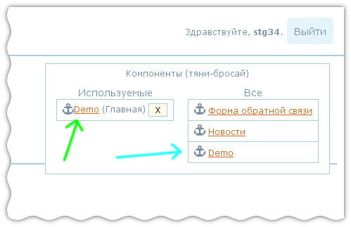
Компоненты в левом и правом списке являются разными компонентами! При добавлении компонента к проекту происходит не добавление ссылки на один из существующих компонентов, а копирование компонента. Т.о. компоненты на картинке отмеченные зеленой и лазурной стрелками являются разными компонентами.
Если необходимо изменить компонент, который уже присоединен к проекту следует использовать ссылку помеченную зеленой стрелкой. Изменения компоненты не отразятся на компоненте помеченной лазурной стрелкой.
Надпись в скобках справа от названия присоединенного компонента соответствует названию страницы, к которой присоединен компонент. Крестик еще правее может быть использован для удаления компонента из проекта.
Содержание